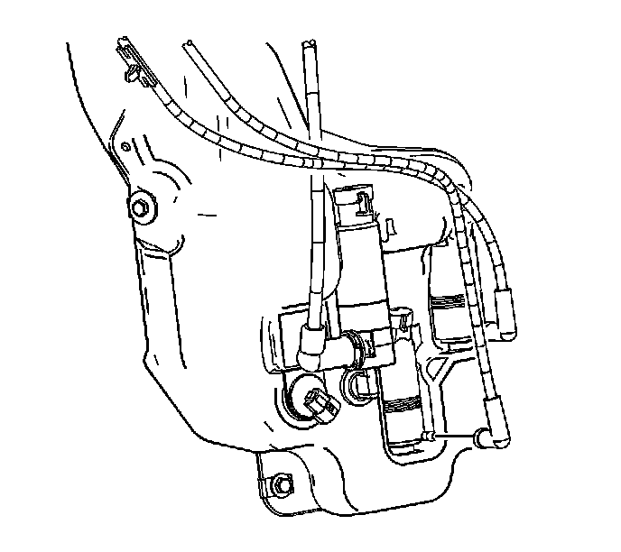
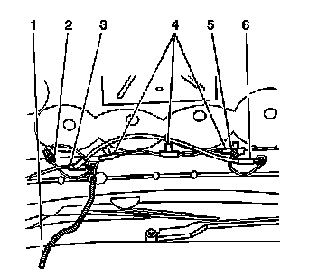

Windshield Washer Hose: Service and Repair
Windshield Washer Hose Replacement
Removal Procedure

1. Remove the air deflector. Refer to Front Air Deflector Replacement (Service and Repair) .
2. Disconnect the washer hose from the washer pump.
3. Drain the washer solvent into a suitable container.
4. Remove the hood insulator. Refer to Hood Insulator Replacement (Service and Repair) .
5. Remove the passenger side air inlet grille. Refer to Air Inlet Grille Panel Replacement (Service and Repair) .

6. Disconnect the washer hose retainer clip (1) from the inside of the hood hinge.

7. Disconnect the washer hose connections (3,6) from the washer nozzles.
8. Remove the washer hose from the passenger side inner fender.
9. Remove the hose rearward from the passenger side hood hinge.
10. Remove the washer hose from the vehicle.
Installation Procedure
1. Position the washer hose around the passenger side hood hinge (1).
2. Route the hose (washer pump end first) forward behind the bracket securing the inner fender to the wheelhouse.
3. Route the hose (4) downward to the washer solvent container.
4. Secure the washer hose retainer (1) to the inside edge of the hood hinge.
5. Connect the washer hose connections (2) to the washer nozzles.
6. Install the air inlet grille (1). Refer to Air Inlet Grille Panel Replacement (Service and Repair) .
7. Install the hood insulator. Refer to Hood Insulator Replacement (Service and Repair) .
8. Connect the washer hose to the washer pump.
9. Install the air deflector. Refer to Front Air Deflector Replacement (Service and Repair) .
10. Fill the washer solvent container.
11. Verify washer operation.